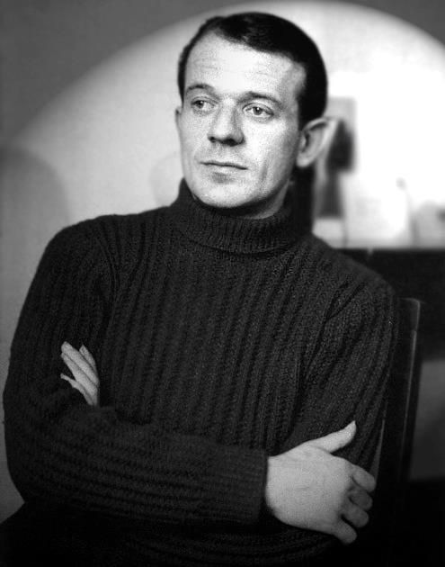

Who Was Gilles Deleuze?
Gilles Deleuze (1925–1995) was one of the most influential French philosophers of the twentieth century. His work transformed discussions of metaphysics, politics, literature, art, cinema, psychology, and the nature of human identity. Deleuze is especially famous for developing a philosophy centered on difference, becoming, multiplicity, and creativity.
Gilles Deleuze rejected the idea that philosophy should begin by placing the world into fixed categories and stable identities. He believed reality is constantly changing, producing new relationships, possibilities, and forms of existence. Instead of asking only "What is something?", Deleuze often asked how something changes, connects, develops, and becomes something else.
Deleuze is also widely known for his collaboration with the psychoanalyst and activist Félix Guattari. Together, they wrote major works such as Anti-Oedipus and A Thousand Plateaus, which introduced influential concepts including the rhizome, assemblage, deterritorialization, reterritorialization, and becoming.
Although Gilles Deleuze's philosophy can initially appear difficult, his central concern is deeply connected with ordinary life: how can people think beyond fixed identities and established structures? His philosophy encourages readers to see reality not as a collection of isolated things but as a complex network of forces, relations, movements, and possibilities.
Gilles Deleuze: Quick Facts
- Full name — Gilles Deleuze
- Born — January 18, 1925
- Died — November 4, 1995
- Nationality — French
- Philosophical tradition — Contemporary French philosophy and poststructuralism
- Major fields — Metaphysics, political philosophy, aesthetics, philosophy of art, cinema, and philosophy of desire
- Major concepts — Difference, repetition, becoming, rhizome, assemblage, multiplicity, deterritorialization, and desire
- Important collaborator — Félix Guattari
- Major work — Difference and Repetition
- Major collaborative work — A Thousand Plateaus
- Important influences — Spinoza, Nietzsche, Bergson, Hume, Kant, and others
- Known for — Developing a philosophy of difference and becoming
Gilles Deleuze's Early Life and Education

Gilles Deleuze was born in Paris, France, in 1925. His early life was shaped by the political and social instability surrounding the Second World War. The intellectual environment of twentieth-century France later exposed him to major philosophical debates concerning existentialism, Marxism, psychoanalysis, structuralism, and the changing role of philosophy in modern society.
Deleuze studied philosophy in Paris and developed a strong interest in the history of philosophy. Rather than treating earlier philosophers as merely historical figures, he engaged with thinkers such as David Hume, Baruch Spinoza, Immanuel Kant, Friedrich Nietzsche, and Henri Bergson as active sources of philosophical ideas.
His early books often focused on individual philosophers. Deleuze wrote influential studies of Hume, Nietzsche, Kant, Bergson, and Spinoza before becoming internationally famous for his own distinctive philosophical system. These studies helped establish the intellectual foundations of his later work on difference, multiplicity, and becoming.
By the late 1960s, Deleuze had begun producing some of his most important original works. His philosophy increasingly moved away from traditional models based on fixed identity and representation toward a dynamic understanding of reality as a process of movement, transformation, connection, and creative production.
Why Is Gilles Deleuze Important?
Gilles Deleuze is important because he challenged some of the deepest assumptions of traditional Western philosophy. Philosophers often attempted to identify the stable essence or identity of things, but Deleuze argued that change and difference should not be treated as secondary problems. For him, difference itself is fundamental to reality.
His work also changed the way many scholars think about identity. Individuals, societies, institutions, and cultures are not always fixed entities with permanent boundaries. They are shaped by changing relationships, historical conditions, desires, technologies, social forces, and encounters with other people.
Deleuze's collaboration with Félix Guattari became particularly influential in political theory and cultural studies. Their ideas about rhizomes and assemblages offered alternatives to hierarchical models of society and knowledge. These concepts later influenced sociology, geography, media studies, architecture, education, and cultural theory.
Today, Gilles Deleuze remains one of the most widely discussed contemporary philosophers because his work can be applied across many disciplines. His ideas continue to influence debates about capitalism, technology, identity, art, environmental thought, desire, networks, and the possibility of creating new ways of living.
The Historical Context of Gilles Deleuze's Philosophy
Gilles Deleuze developed his philosophy during a period of major intellectual change in France and Europe. The twentieth century had witnessed world wars, political revolutions, the growth of mass capitalism, and major developments in science, psychology, and technology. Traditional philosophical systems were increasingly being questioned from many different directions.
Deleuze's work emerged alongside and partly in response to existentialism, phenomenology, structuralism, psychoanalysis, and Marxism. Thinkers such as Jean-Paul Sartre, Michel Foucault, Jacques Lacan, Claude Lévi-Strauss, and others were reshaping French intellectual life during the period in which Deleuze developed his ideas.
The political movements of the late 1960s also formed an important background to his work. The events of May 1968 in France challenged established authority and encouraged new discussions about freedom, education, sexuality, work, political power, and social organization. Deleuze and Guattari developed many of their collaborative ideas within this wider atmosphere of experimentation and criticism.
This historical context helps explain why Deleuze was deeply interested in alternatives to centralized and hierarchical systems. His philosophy repeatedly investigates how power organizes human life while also asking how new connections and new possibilities can emerge from within existing social and intellectual structures.
Gilles Deleuze's Main Philosophical Ideas
1. Difference Is Fundamental
Deleuze argued that philosophy should not treat difference simply as a variation from an already established identity. Difference is productive and creative in its own right. Reality constantly produces new forms, relationships, events, and possibilities that cannot always be understood by reducing them to familiar categories.
2. Reality Is Always Becoming
The concept of becoming is central to Deleuze's philosophy. Things are not simply fixed objects with permanent identities; they exist within processes of transformation. Becoming describes movement and change without assuming that every process must end in one final and stable identity.
3. Multiplicity Replaces Simple Unity
Deleuze often described reality in terms of multiplicities. A multiplicity is not merely a large collection of separate objects. It is a complex field of relationships and differences in which elements affect one another and create new forms of organization.
4. Desire Is Productive
Together with Félix Guattari, Deleuze challenged the idea that desire should always be understood as a feeling of lack. They argued that desire actively produces connections, relationships, institutions, social arrangements, and forms of life. Desire is therefore a creative and productive force rather than simply an absence.
5. Philosophy Creates Concepts
Deleuze believed philosophy should not merely repeat established opinions. Philosophy creates concepts that allow people to think about reality in new ways. Concepts such as the rhizome, assemblage, and deterritorialization were developed as tools for understanding complex processes that traditional categories could not easily explain.
Gilles Deleuze's Philosophy of Difference
Difference is perhaps the most important concept in Gilles Deleuze's philosophy. Traditional philosophy often begins with identity: first something is defined as a particular thing, and then differences are understood as variations from that identity. Deleuze attempted to reverse this approach by arguing that difference itself should be taken seriously as a fundamental reality.
For Deleuze, no two events are ever completely identical. Even when something appears to repeat itself, the situation in which it occurs has changed. Time has passed, circumstances are different, and new relationships have emerged. What appears to be the same may therefore contain important differences.
This philosophy of difference challenges the desire to reduce everything to stable categories. Human beings often classify people, cultures, and experiences into simple identities, but Deleuze emphasizes the complexity that exists beneath such classifications. Reality contains more variation and creative movement than fixed labels can fully capture.
Deleuze's theory of difference has influenced contemporary discussions about identity, politics, art, and culture. It encourages people to ask whether existing categories genuinely describe reality or whether they sometimes prevent new forms of thought and experience from being recognized.
Difference and Repetition Explained
Difference and Repetition is one of Gilles Deleuze's most important philosophical works. In this book, Deleuze challenges traditional ways of understanding identity, similarity, and repetition. He argues that genuine repetition should not be confused with the simple reproduction of exactly the same thing.
When something happens again, it occurs under new conditions. A repeated event therefore contains difference within it. A person may perform the same action every day, for example, but each performance takes place at a different moment and within a different network of experiences and circumstances.
Deleuze uses this idea to criticize philosophical systems that give absolute priority to identity. He suggests that identity is often produced through processes of difference rather than existing before those processes. What something becomes depends on the relationships, forces, encounters, and transformations through which it develops.
The importance of difference and repetition extends beyond abstract metaphysics. These ideas influence Deleuze's understanding of art, creativity, personal identity, history, and social change. Repetition can preserve patterns, but it can also produce unexpected variations and new possibilities.
What Did Gilles Deleuze Mean by Becoming?
Becoming is one of the best-known concepts in Gilles Deleuze's philosophy. Becoming refers to processes of transformation rather than movement toward one fixed final identity. Deleuze was less interested in asking what a thing permanently is than in examining what relationships and transformations it can enter into.
Becoming does not simply mean changing from one clearly defined object into another. It refers to a more complex process in which identities themselves can become unstable. New encounters can alter how individuals understand themselves and how they relate to the world around them.
Deleuze and Guattari developed several forms of becoming, including ideas such as becoming-animal. These concepts are not necessarily literal claims that a human physically transforms into an animal. Instead, they explore how established human identities and boundaries can be challenged through new relationships and modes of experience.
The idea of becoming is important because it resists the belief that human beings must remain permanently confined within fixed identities. Deleuze's philosophy emphasizes openness, experimentation, and the possibility that new ways of thinking and living can emerge through encounters that transform existing relationships.
What Is a Rhizome in Gilles Deleuze's Philosophy?
The rhizome is one of the most famous concepts developed by Gilles Deleuze and Félix Guattari. A rhizome is used as a model for understanding systems that do not grow through a single central hierarchy. Unlike a tree with one trunk and branching divisions, a rhizomatic structure can spread through many different directions and connections.
Deleuze and Guattari used the rhizome to challenge traditional hierarchical models of knowledge. Some systems of thought assume that knowledge must begin from one central foundation and move outward in a clearly organized structure. A rhizomatic system, by contrast, allows multiple points of entry and many different connections.
The rhizome has become especially influential in discussions of networks and modern technology. The internet, for example, contains many interconnected pathways rather than one single route through knowledge. However, the philosophical idea of the rhizome is broader than any particular technology.
The concept encourages people to think about reality through connection, movement, and multiplicity. Ideas can connect with other ideas across unexpected areas, and individuals can participate in many overlapping networks. The rhizome therefore represents an alternative to rigid systems based entirely on centralized authority and fixed classification.
What Is an Assemblage?
Assemblage is another major concept associated with Gilles Deleuze and Félix Guattari. An assemblage can be understood as a temporary organization of different elements that function together. These elements may include people, objects, technologies, ideas, institutions, habits, environments, and systems of communication.
An assemblage is not simply a collection of separate objects placed next to one another. The relationships between the elements are important because those relationships create particular capacities and effects. When the relationships change, the assemblage itself may also change and produce different possibilities.
A city, workplace, classroom, family, political movement, or online community can all be studied as complex assemblages. Each contains different elements interacting with one another. No single element necessarily explains the entire system because the relationships between elements are constantly changing.
Assemblage theory has become influential outside philosophy because it provides a way of studying complex systems without assuming that they have one permanent essence. It encourages researchers to examine connections, relationships, material conditions, social practices, and changing structures together.
Gilles Deleuze and Félix Guattari on Desire
Gilles Deleuze and Félix Guattari developed a highly influential theory of desire. They criticized approaches that understand desire mainly as a response to something missing. According to this traditional view, a person desires an object because they lack it and hope to become complete by obtaining it.
Deleuze and Guattari offered a different perspective. They described desire as productive. Desire creates connections and relationships between people, objects, ideas, and social structures. Human beings do not simply desire things in isolation; desire operates within larger systems of culture, economics, politics, and everyday life.
Their theory challenges the strict separation between individual psychology and society. Desires are shaped by social institutions, economic systems, media, families, and cultural expectations. At the same time, desire can also create new possibilities that do not fit neatly into established social structures.
This approach became particularly important in their critique of psychoanalysis and capitalism. Deleuze and Guattari asked how social systems organize desire and why people may sometimes desire forms of life that appear to restrict them. Their analysis connects personal psychology with larger political and economic forces.
Anti-Oedipus and the Critique of Psychoanalysis
Anti-Oedipus, written by Gilles Deleuze and Félix Guattari, is one of the most important works of twentieth-century philosophy and critical theory. The book challenges traditional psychoanalysis, particularly theories that place the Oedipus complex at the center of human desire and psychological development.
Deleuze and Guattari argued that psychoanalysis can sometimes reduce complex human desires to a limited family structure. They believed desire connects individuals to much larger systems involving work, economics, politics, technology, institutions, and culture. Human desire cannot always be adequately explained through family relationships alone.
The book introduced the idea of desiring-production. This concept emphasizes that desire actively produces connections and realities rather than simply dreaming about objects that are absent. Desire participates in the creation of both personal experiences and larger social arrangements.
Anti-Oedipus also examines the relationship between desire and capitalism. Deleuze and Guattari ask how economic systems organize human desires while simultaneously encouraging the production of new desires. The result is a complex philosophical analysis connecting psychology, politics, economics, and social power.
Gilles Deleuze, Guattari, and Capitalism
Gilles Deleuze and Félix Guattari developed an unusual analysis of capitalism. They argued that capitalism constantly transforms traditional social structures by creating new markets, technologies, desires, and forms of production. It is therefore not simply a system that preserves old traditions unchanged.
At the same time, capitalism does not produce unlimited freedom. Deleuze and Guattari argue that systems of control and organization can emerge alongside processes of economic change. Capitalism can break apart older structures while creating new ways of directing labor, consumption, communication, and desire.
Their concept of capitalism is closely connected with deterritorialization and reterritorialization. Existing structures may be disrupted and opened, but new structures can later organize and stabilize those movements in different forms.
Their work remains influential because modern capitalism continues to transform social life through globalization, digital technology, advertising, data, and consumer culture. Deleuze and Guattari provide philosophical tools for examining how economic systems influence not only material conditions but also identity, imagination, desire, and everyday behavior.
What Is Deterritorialization?
Deterritorialization is one of the most distinctive concepts developed by Deleuze and Guattari. In simple terms, it refers to a process in which something moves away from its established context, structure, territory, or traditional organization. Existing relationships become unstable and new possibilities can emerge.
Deterritorialization can occur in language, politics, culture, economics, technology, and personal identity. A language may change when it is used in a new environment. A social practice may leave its original context and develop a different meaning. A technological innovation may transform how people communicate and organize their lives.
Deleuze and Guattari also describe reterritorialization, the process through which new structures and forms of organization emerge. Deterritorialization does not simply mean complete freedom or chaos. New patterns can form after older patterns are disrupted.
These concepts are useful because they describe change as a complex process rather than a simple movement from oppression to freedom. Structures can break apart, but new systems of control and organization may develop. Deleuze's philosophy therefore examines both the creative and the restrictive possibilities produced by social transformation.
Multiplicity in Gilles Deleuze's Philosophy
Multiplicity is central to Gilles Deleuze's attempt to move beyond simple oppositions such as one versus many. A multiplicity is not merely a large number of separate objects. It is a complex arrangement of relationships, differences, movements, and possibilities that cannot be understood by reducing everything to one central principle.
Deleuze uses multiplicity to challenge philosophical systems that search for a single ultimate foundation behind all of reality. Human life and the natural world contain many interacting processes, and these processes may not always fit into one unified structure.
Multiplicity also helps explain why identity can be complicated. A person participates simultaneously in families, friendships, workplaces, cultures, technologies, political institutions, memories, and physical environments. Human identity is therefore connected with many overlapping relationships rather than existing as one completely isolated essence.
The concept remains influential in contemporary theory because it provides a vocabulary for complexity. Instead of asking what one thing fundamentally is, philosophers can investigate the many forces and relationships through which something becomes organized and changes over time.
What Is the Body Without Organs?
The Body without Organs is one of the most difficult and widely discussed concepts associated with Deleuze and Guattari. Despite its unusual name, it should not be understood literally as a biological body without physical organs. The concept refers to a way of thinking about the organization of desire, identity, and social life.
Human beings are constantly organized by habits, institutions, identities, expectations, and systems of meaning. The Body without Organs represents an attempt to think about the potential that exists beneath or beyond these established forms of organization. It concerns the possibility of different arrangements and capacities.
However, Deleuze and Guattari do not simply celebrate the destruction of all structure. Complete disorganization can also be dangerous and destructive. Their philosophy is concerned with experimentation and transformation, but it also recognizes that individuals and societies require forms of organization in order to function.
The concept therefore asks a difficult philosophical question: how can people escape restrictive patterns without simply collapsing into chaos? The Body without Organs represents an exploration of potential, experimentation, and the search for new ways of organizing desire and existence.
Gilles Deleuze and Baruch Spinoza
Baruch Spinoza was one of Gilles Deleuze's most important philosophical influences. Deleuze admired Spinoza because his philosophy challenged traditional ideas about transcendence, morality, and the separation between mind and body. Spinoza's thought provided Deleuze with important resources for developing his own philosophy of immanence.
Deleuze was particularly interested in Spinoza's understanding of bodies and their capacities. Instead of defining a body only by its fixed essence, one can ask what a body can do and what relationships it can enter. This question became highly important for Deleuze's broader philosophy of becoming and assemblages.
Spinoza also influenced Deleuze's criticism of moral systems based on transcendent judgment. Deleuze was interested in evaluating forms of life according to the capacities and relationships they produce rather than relying only on universal moral rules imposed from outside experience.
Deleuze famously regarded Spinoza as an exceptionally important philosopher. His interpretation helped introduce Spinoza to new generations of readers and connected seventeenth-century metaphysics with twentieth-century debates about desire, bodies, power, and the possibilities of human life.
Gilles Deleuze and Friedrich Nietzsche
Friedrich Nietzsche was another major influence on Gilles Deleuze. Deleuze's interpretation of Nietzsche emphasized creativity, affirmation, difference, and the criticism of systems based on resentment and negative judgment. Nietzsche provided Deleuze with a philosophical model that valued the creation of new forms of life.
Deleuze rejected interpretations of Nietzsche that reduce him to a philosopher of simple individual power. Instead, he emphasized Nietzsche's critique of reactive forces and his attempt to understand life through activity, creation, and transformation.
Nietzsche's concept of becoming also influenced Deleuze's opposition to fixed metaphysical identities. Reality is not a completed system standing outside time. It involves forces, transformations, conflicts, relationships, and processes that continually produce new possibilities.
Deleuze's book Nietzsche and Philosophy became an important interpretation of Nietzsche in twentieth-century French philosophy. Through Nietzsche, Deleuze developed a vocabulary for criticizing fixed moral judgments while exploring how philosophy can affirm creativity, experimentation, and the production of difference.
Gilles Deleuze and Henri Bergson
Henri Bergson strongly influenced Deleuze's understanding of time, movement, memory, and becoming. Bergson argued that lived time cannot always be understood as a simple sequence of identical units. Human experience involves duration, memory, and continuous transformation.
Deleuze developed these ideas in his own philosophy. He was interested in forms of change that cannot be reduced to mechanical movement from one fixed point to another. Becoming involves qualitative transformation, meaning that something may change in ways that produce genuinely new possibilities.
Bergson also influenced Deleuze's later work on cinema. Film creates new ways of experiencing movement and time, making it possible to investigate philosophical questions through visual images rather than through written arguments alone.
Deleuze's engagement with Bergson demonstrates the importance of the history of philosophy to his work. He did not simply abandon earlier thinkers in order to create something entirely new. Instead, he transformed philosophical traditions by bringing their concepts into new relationships and contemporary discussions.
Gilles Deleuze and Félix Guattari
The collaboration between Gilles Deleuze and Félix Guattari produced some of the most influential works in contemporary philosophy. Guattari was a psychoanalyst, political activist, and thinker with direct experience in psychiatry and radical political movements. His background complemented Deleuze's philosophical work.
Together, they developed concepts that crossed traditional academic boundaries. Their writings connect philosophy with psychoanalysis, politics, economics, literature, anthropology, and art. Rather than creating one closed philosophical system, they produced a network of concepts designed to analyze changing social and psychological realities.
Their two major collaborative projects are Capitalism and Schizophrenia, consisting of Anti-Oedipus and A Thousand Plateaus. These books explore desire, capitalism, social organization, identity, power, and the possibility of escaping rigid structures.
The collaboration between Deleuze and Guattari itself reflects an important aspect of their philosophy. Thought does not always emerge from one isolated individual. Ideas can be produced through encounters, collaborations, conversations, institutions, and relationships between different disciplines and forms of experience.
What Is A Thousand Plateaus About?
A Thousand Plateaus is one of the most famous and challenging works written by Gilles Deleuze and Félix Guattari. The book does not follow a traditional linear philosophical structure. Instead, it consists of interconnected sections called "plateaus," which can be approached from multiple directions.
This unusual structure reflects the book's philosophy of the rhizome. Readers are encouraged to form connections between different concepts rather than assuming that philosophical knowledge must always proceed from one beginning toward one final conclusion.
The book introduces and develops concepts including rhizomes, assemblages, becoming, deterritorialization, smooth and striated space, lines of flight, and the Body without Organs. These ideas are applied across subjects ranging from politics and music to language, geography, biology, and literature.
A Thousand Plateaus became enormously influential because it offers a flexible way of thinking about complexity. Instead of reducing society or culture to one cause, Deleuze and Guattari examine how different forces interact and how unexpected transformations can emerge from networks of relationships.
What Are Lines of Flight?
A line of flight is a concept used by Deleuze and Guattari to describe movements through which established structures can be escaped, transformed, or reorganized. A line of flight does not necessarily mean physically running away. It can describe a creative, political, intellectual, or social movement toward new possibilities.
Individuals and societies are organized through habits, institutions, identities, and systems of power. Lines of flight represent moments when these established arrangements become unstable and alternative relationships become possible. New forms of art, politics, technology, and social organization may emerge through such movements.
However, Deleuze and Guattari do not treat every escape from an existing structure as automatically positive. A line of flight can produce creativity, but uncontrolled processes can also become destructive. Their philosophy therefore emphasizes careful experimentation rather than a simple celebration of breaking all boundaries.
The concept remains influential because it provides a way of thinking about change that avoids simple oppositions. Transformation does not always occur through a direct revolution against one central authority. It can also emerge through smaller movements, new connections, and unexpected changes within everyday life.
Gilles Deleuze's Philosophy of Cinema
Gilles Deleuze made major contributions to the philosophy of cinema through his books Cinema 1: The Movement-Image and Cinema 2: The Time-Image. He did not treat cinema simply as entertainment or as a collection of stories. He believed film could create distinctive ways of thinking about movement, time, memory, and perception.
The concept of the movement-image examines forms of cinema in which movement and action organize the viewer's experience. Characters perceive situations, respond through action, and produce a chain of events. Deleuze connects this cinematic structure with philosophical ideas about perception and movement.
The time-image describes forms of cinema in which traditional action becomes less central and time itself becomes more directly visible or thinkable. Memory, uncertainty, disconnected events, dreams, and changing temporal perspectives can challenge ordinary chronological storytelling.
Deleuze's cinema philosophy became highly influential because it demonstrated that philosophical concepts can emerge through artistic media. Film does not merely illustrate philosophical theories created elsewhere. Cinema can produce its own images and problems that require new forms of philosophical thought.
Gilles Deleuze on Art and Creativity
Art occupies an important place in Gilles Deleuze's philosophy. Deleuze believed that art can create new forms of perception and experience rather than merely representing objects that already exist. Artists can reveal forces, movements, sensations, and possibilities that ordinary habits of perception often fail to notice.
Deleuze wrote extensively about painters, writers, filmmakers, and other artists. His studies include important work on the painter Francis Bacon and philosophical discussions of writers such as Marcel Proust, Franz Kafka, and others.
His philosophy of art is closely connected with the concept of becoming. Art can disturb fixed perceptions and create encounters with something unfamiliar. A powerful artistic work may force viewers or readers to think differently rather than simply confirming what they already believe.
For Deleuze, creativity is not limited to producing beautiful objects. It involves the creation of new possibilities. Philosophy creates concepts, science creates functions, and art creates sensations and percepts. Each field has a distinctive relationship with reality and contributes to human thought in different ways.
Gilles Deleuze and Literature
Literature was another major source of philosophical inspiration for Gilles Deleuze. He believed literary works could reveal new forms of experience and challenge conventional uses of language. Writers do not merely communicate established ideas; they can transform language and create new ways of seeing the world.
Deleuze and Guattari's work on Franz Kafka is particularly important. They developed the idea of minor literature, which examines how writers can use a dominant language in unfamiliar ways and connect personal expression with larger political conditions.
Deleuze was interested in literary experimentation because language can become rigid and repetitive. New writing can disturb familiar patterns and create unexpected connections. Literature therefore becomes connected with deterritorialization: language can move away from established meanings and develop new possibilities.
His work on literature influenced literary criticism and cultural theory throughout the world. Deleuze provides a vocabulary for examining how texts produce affects, connections, movements, and forms of becoming rather than focusing only on one final interpretation or fixed meaning.
Gilles Deleuze's Political Philosophy
Gilles Deleuze did not create one simple political ideology that can easily be placed into a conventional category. His political thought is closely connected with his analysis of power, desire, institutions, capitalism, and social organization. He was particularly interested in how systems shape human possibilities.
Deleuze and Guattari criticized highly centralized models of power. They argued that power does not always operate from one single source. It can move through institutions, habits, families, economic systems, language, technologies, and everyday forms of social organization.
Their political philosophy also examines the possibility of creating new forms of collective life. Instead of imagining political change only as the replacement of one government by another, they investigate smaller and more complex processes through which people create new relationships, communities, and ways of organizing social existence.
Deleuze's political influence remains significant in contemporary theory, although his ideas are often debated. Supporters find his work useful for analyzing networks and decentralized power, while critics argue that his abstract vocabulary can make it difficult to translate philosophical concepts into clear political programs.
Gilles Deleuze and the Society of Control
One of Deleuze's most discussed later ideas is the concept of the society of control. Building partly upon Michel Foucault's analysis of disciplinary institutions, Deleuze suggested that modern forms of power were increasingly moving beyond enclosed institutions such as factories, schools, prisons, and hospitals.
In a society of control, power can operate more continuously through networks, information, communication, technology, and systems of monitoring. Individuals may move between different spaces while still being measured, evaluated, classified, and connected to systems of economic and technological control.
Deleuze's short discussion became increasingly relevant in debates about digital technology, data collection, surveillance, algorithms, and online platforms. His work does not provide a complete description of the modern internet, but it offers concepts for thinking about how power can become flexible and distributed.
The society of control demonstrates Deleuze's continuing interest in changing forms of social organization. Power is not static. As technology and institutions change, new forms of freedom and new forms of control can develop at the same time.
Gilles Deleuze and Michel Foucault
Gilles Deleuze and Michel Foucault were important figures in twentieth-century French philosophy and shared interests in power, institutions, history, and the transformation of thought. Both challenged traditional assumptions about stable human identity and the neutrality of social institutions.
Foucault examined how knowledge and power shape human subjects through institutions and historical practices. Deleuze developed different concepts for understanding social organization, particularly through assemblages, desire, multiplicities, and deterritorialization.
Deleuze wrote an important book about Foucault's philosophy after Foucault's death. In it, he examined Foucault's ideas about knowledge, power, and subjectivity while interpreting them through his own philosophical framework.
Their relationship demonstrates the richness of contemporary French philosophy. Deleuze and Foucault did not produce identical systems, but their work can be placed in conversation when examining questions about institutions, identity, social power, resistance, and the changing organization of modern life.
What Did Gilles Deleuze Think Philosophy Should Do?
Gilles Deleuze believed that philosophy should actively create concepts. Philosophy is not simply the repetition of historical theories or the discovery of eternal definitions. Philosophers encounter new problems and create concepts that make it possible to think about those problems in different ways.
This view explains why Deleuze's writing introduced so many unusual concepts. Terms such as rhizome, assemblage, becoming, line of flight, and deterritorialization were not intended merely as complicated vocabulary. They were created to address forms of reality that Deleuze believed could not be adequately understood through traditional philosophical categories.
Deleuze also rejected the idea that philosophy should stand above other forms of knowledge and simply judge them. Philosophy exists in relationships with science, art, politics, literature, and everyday experience. Different disciplines create different ways of engaging with reality.
His conception of philosophy remains influential because it emphasizes creativity. Philosophical thinking should not merely preserve existing concepts when those concepts no longer explain changing realities. Philosophy must remain capable of inventing new tools for thought.
Major Works of Gilles Deleuze
- Difference and Repetition — Deleuze's major philosophical work on difference, repetition, identity, time, and the foundations of metaphysics.
- The Logic of Sense — A complex philosophical investigation of language, events, paradoxes, meaning, and the relationship between bodies and sense.
- Nietzsche and Philosophy — An influential interpretation of Nietzsche focusing on forces, affirmation, difference, and the critique of reactive morality.
- Spinoza: Practical Philosophy — A major interpretation of Spinoza emphasizing bodies, capacities, affects, ethics, and the possibilities of human life.
- Anti-Oedipus — Written with Félix Guattari, this work examines desire, psychoanalysis, capitalism, and social production.
- A Thousand Plateaus — Written with Félix Guattari, this influential book develops the rhizome, assemblage, becoming, deterritorialization, and many other concepts.
- Cinema 1: The Movement-Image — A philosophical study of cinema, perception, movement, and the structure of film.
- Cinema 2: The Time-Image — An exploration of cinematic time, memory, and forms of film that move beyond traditional action-centered narratives.
Gilles Deleuze's Most Important Concepts
Difference
Difference is not simply a variation from an already existing identity. Deleuze treats difference as a productive and fundamental force through which new realities, events, and possibilities emerge.
Repetition
Genuine repetition never simply reproduces an identical event. Every repetition occurs within changing circumstances and therefore contains difference, variation, and the possibility of transformation.
Becoming
Becoming describes processes of transformation that do not necessarily lead toward one final and stable identity. Reality remains open to new relationships, encounters, and forms of existence.
Rhizome
A model of organization based on multiple connections rather than one central hierarchy. Rhizomatic thinking emphasizes networks, movement, multiple entry points, and unexpected relationships.
Assemblage
A changing arrangement of people, objects, institutions, ideas, technologies, environments, and relationships that function together and produce particular capacities or effects.
Deterritorialization
A process through which something moves away from an established structure or context, opening new possibilities while also potentially producing new forms of organization.
Desire
Deleuze and Guattari describe desire as productive rather than merely a feeling of lack. Desire creates connections and participates in the production of social and personal realities.
Multiplicity
A complex field of relationships and differences that cannot be reduced to one central principle. Multiplicity provides a way of understanding reality without forcing everything into simple unity.
Gilles Deleuze's Influence and Legacy
Gilles Deleuze has had an enormous influence on contemporary philosophy and many other academic disciplines. His work is discussed in political theory, sociology, geography, architecture, literary criticism, media studies, anthropology, education, art theory, and cultural studies.
The concepts of the rhizome and assemblage became particularly influential because they offer ways of understanding complex networks. Researchers use these ideas to study cities, technologies, organizations, environments, communities, and other systems involving many interacting elements.
Deleuze's philosophy has also influenced artists and filmmakers. His work demonstrates that philosophy and art can enter into productive relationships without becoming identical disciplines. Concepts of becoming, sensation, movement, and affect have become important within contemporary artistic and cultural theory.
His influence continues to grow because many modern problems involve complexity and rapid transformation. Digital networks, globalization, artificial intelligence, environmental change, and shifting forms of identity all raise questions about relationships, systems, movement, and becoming that Deleuze's concepts can help illuminate.
Criticisms of Gilles Deleuze's Philosophy
One of the most common criticisms of Gilles Deleuze is that his writing is extremely difficult. His concepts often interact with one another in complex ways, and his books move between philosophy, science, literature, psychoanalysis, and art. New readers may therefore find it difficult to determine exactly how some concepts should be applied.
Critics also argue that Deleuze sometimes uses scientific and mathematical language in highly philosophical ways that can create confusion. Supporters respond that his work is not intended to provide simple scientific explanations but to create conceptual tools for thinking about complexity and transformation.
His political philosophy has also generated debate. Concepts such as becoming, deterritorialization, and lines of flight can inspire creative thinking about social change, but critics argue that they do not always provide clear guidance for practical political action.
Despite these criticisms, Deleuze remains highly influential. The difficulty of his philosophy is partly connected with his attempt to resist simple formulas. He wanted philosophy to confront the complexity of reality rather than reducing every problem to a single universal explanation.
Gilles Deleuze's Philosophy Explained Simply
- What was Deleuze's main idea? Reality is constantly changing and producing differences. Human beings should not assume that everything has one fixed identity or permanent essence.
- What does becoming mean? Becoming refers to processes of transformation and change. Things develop through relationships and encounters rather than always moving toward one final identity.
- What is a rhizome? A rhizome is a model of organization based on many connections rather than one central hierarchy, similar to a network with multiple possible pathways.
- What is an assemblage? An assemblage is a changing arrangement of different elements, such as people, objects, technologies, institutions, and ideas, that interact and function together.
- What did Deleuze say about desire? Deleuze and Guattari argued that desire is productive. It creates connections and relationships rather than existing only because something is missing.
- Why is Deleuze difficult to read? His philosophy introduces many new concepts and connects different disciplines. He deliberately challenged familiar philosophical categories and did not always write in a simple linear style.
Why Does Gilles Deleuze Still Matter Today?
Gilles Deleuze remains relevant because modern life is increasingly shaped by rapid change and complex networks. People live within overlapping systems of technology, economics, culture, politics, and communication. Deleuze's philosophy provides concepts for studying these relationships without assuming that one simple explanation can explain everything.
The concept of the rhizome is particularly relevant to the digital world. Information now moves through networks with multiple points of connection rather than following only traditional hierarchical structures. Social media, online communities, and digital knowledge systems demonstrate both the creative and problematic possibilities of networked organization.
Deleuze's philosophy of becoming also remains important in discussions about identity. Modern societies increasingly recognize that personal and social identities can be complex and shaped by changing relationships, experiences, environments, and historical conditions. Deleuze provides a philosophical vocabulary for thinking beyond overly rigid definitions.
Most importantly, Gilles Deleuze remains a philosopher of possibility. His work asks readers not only to understand the world as it currently exists but also to consider what new relationships, concepts, and ways of living might become possible. This commitment to creativity keeps Gilles Deleuze's philosophy highly relevant today.
Frequently Asked Questions About Gilles Deleuze
Who was Gilles Deleuze?
Gilles Deleuze was a French philosopher who lived from 1925 to 1995. He is known for his philosophy of difference, repetition, becoming, multiplicity, desire, assemblages, and rhizomes, as well as his influential collaboration with Félix Guattari.
What is Gilles Deleuze famous for?
Gilles Deleuze is famous for concepts including difference and repetition, becoming, the rhizome, assemblages, deterritorialization, and the philosophy of desire. He is also known for Difference and Repetition, Anti-Oedipus, and A Thousand Plateaus.
What is Difference and Repetition about?
Difference and Repetition argues that difference should be understood as fundamental rather than simply as a variation from an existing identity. Deleuze also examines how repetition always occurs through changing circumstances and therefore contains difference.
What does Deleuze mean by becoming?
Becoming refers to processes of transformation that do not necessarily end in one fixed identity. It emphasizes movement, relationships, encounters, and the possibility of developing in new and unexpected ways.
What is a rhizome according to Deleuze?
A rhizome is a model of organization based on multiple connections rather than one central hierarchy. Deleuze and Guattari used it to challenge rigid, tree-like systems of knowledge and social organization.
What is an assemblage?
An assemblage is a changing arrangement of different elements that interact together. These elements can include people, institutions, objects, technologies, ideas, environments, and social practices.
Who was Félix Guattari?
Félix Guattari was a French psychoanalyst, philosopher, and political activist who collaborated closely with Gilles Deleuze. Together they wrote Anti-Oedipus and A Thousand Plateaus.
What did Deleuze believe about desire?
Deleuze and Guattari argued that desire is productive rather than simply a response to something missing. Desire creates connections and participates in the production of personal and social realities.
What is deterritorialization?
Deterritorialization is a process through which something moves away from its established context or structure. It can create new possibilities, although new forms of organization may later emerge through reterritorialization.
Was Gilles Deleuze a poststructuralist?
Gilles Deleuze is frequently associated with poststructuralism and contemporary French philosophy. However, his own philosophical project developed distinctive concepts and cannot be completely reduced to a single academic label.
Why is Gilles Deleuze important today?
Deleuze remains important because his ideas help explain complexity, networks, changing identities, technology, capitalism, art, and social transformation. His philosophy encourages new ways of thinking about a rapidly changing world.
Related Contemporary and Modern Philosophers
Explore other major philosophers connected with poststructuralism, existential thought, power, difference, identity, political philosophy, metaphysics, and the development of contemporary thought.
Related Areas of Philosophy
Gilles Deleuze's philosophy connects metaphysics, epistemology, political philosophy, aesthetics, philosophy of art, philosophy of language, philosophy of mind, and contemporary philosophical thought.
Why Gilles Deleuze Still Matters
Gilles Deleuze remains one of the most original philosophers of the twentieth century because he challenged people to think beyond fixed identities and rigid systems. His philosophy begins with movement, difference, relationships, and the continuous production of new possibilities rather than with the search for one permanent essence.
Through concepts such as becoming, multiplicity, the rhizome, assemblage, and deterritorialization, Deleuze created a new vocabulary for understanding complexity. These ideas continue to influence philosophy and many other fields because modern life increasingly involves networks, rapid transformation, and overlapping systems.
Deleuze's collaboration with Félix Guattari expanded these questions into the study of desire, capitalism, politics, technology, and social organization. Their work remains challenging, but it encourages readers to question whether established categories are truly permanent—or whether reality always contains possibilities for becoming something different.
Ultimately, Gilles Deleuze's philosophy is an invitation to think creatively. Instead of asking only how the world should be classified, Deleuze asks what new connections can be created and what new forms of life might become possible. That commitment to difference and creativity keeps his philosophy alive today.
Explore Great Philosophers